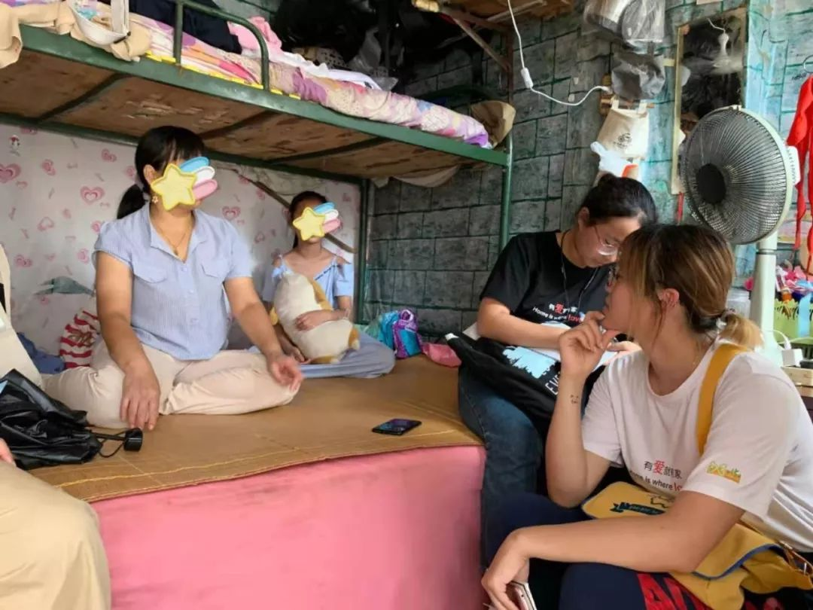
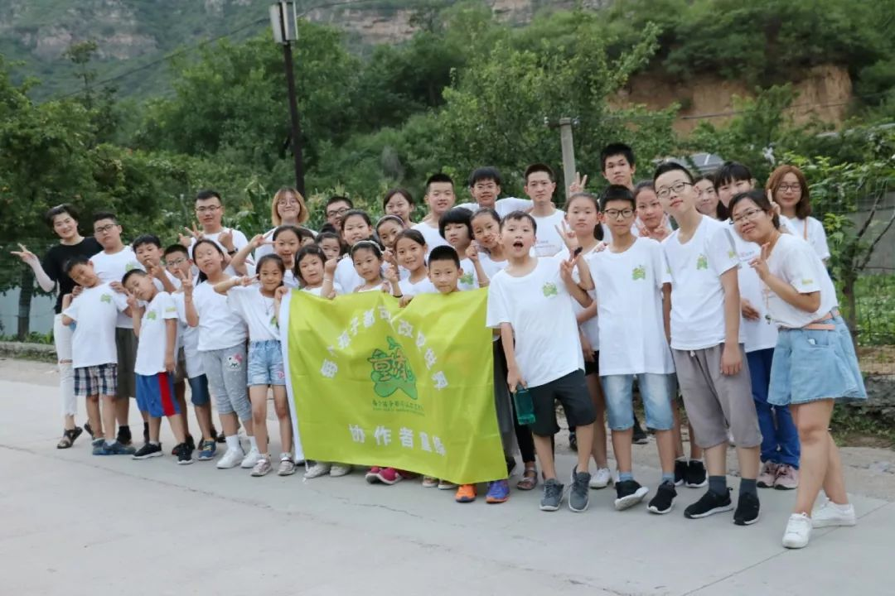

疫情下的深呼吸 | 我扛着这个家，尽力过一天算一天
原文链接 备份链接 我扛着这个家，尽力过一天算一天 口述者：刘霞（化名）/安徽籍 打工所在地：北京 编者注：刘霞， 44岁，没上过学，2015年带着患有肾病综合症的小儿子到北京求医。刘霞的丈夫打着多份工作支撑家庭，积劳成疾，在去年9月突 …
不识字的我，心里压力很大
口述者：李玲（化名）/山东籍
打工所在地：北京
编者注：李玲，47岁，不识字。因为丈夫腰病严重不能工作，她独自一人带着就读小学5年级的女儿冉冉在北京打工谋生。虽然李玲自己也患有腰间盘突出和心肌炎，只因病情相对丈夫较轻，她顶着压力打着两份家政小时工，一个人支撑着家。
现在的收入就是我自己打了两份小时工
我老家是山东菏泽单县农村的，2012年到北京打工，以前断断续续来了又回去，很多次。
我在北京干着两份做饭的小时工，我和老公身体都不好，干不了别的活儿。我不识字，我们家就靠我挣钱。我有腰间椎盘突出的病，心脏也不舒服，也有点心肌炎，得了8年多了。这两天不知道是（因为疫情）吓得还是什么的，反正晚上老出汗，心里空落落的难受。心肌炎也去医院看过，是以前有一次发烧烧的特别厉害，烧的眼睛当时都看不见了，也烧出心肌炎了，一直没有除根，现在没吃药，什么药也没吃，没有钱。腰椎间盘压迫的腿走路疼，医院说得做手术，要十万元，没有别的好办法，而且做不好的话会残疾。
我老公也是腰间盘突出，比我还厉害，腰疼起来疼得直哭，只能吃止疼片，不吃饭光吃药把胃吃坏了，胃穿孔了，腰就没法继续治疗，回家先养胃。后来我的腰也开始疼了，他就没法继续去看病，就在老家养着。他也没继续上过班。他看着跟好人一样，一干活就不行，等过年我想着给他找一个做保安什么的工作。他心情不好就特别烦躁，我想他哪怕给饭店刷个碗啥的，可即使想去干小时工，人家也不愿意找男同志的……慢慢来，有工作干了心情就不一样了，等天暖和了让他去找找试试。他要是能干点活，我的负担也能小一点。
我是一着凉或者一阴天，腰疼就特别明显。腰特别疼的话就休息两天，或者拿热水袋敷一下，自己知道这病是怎么回事了，没再上过医院。全家三口人都有新农合，3个人一年交1000元。住院的话能报70%，减去这个药、那个药不能报的，其实就相当于能报销40%。
现在的收入就是我自己打了两份家政做饭的小时工，一份是每天上午，另一份是每天晚上两小时去给人家做饭，一个月一共3000元。花销就是房租水电1100元/月，孩子每学期3000元学费杂费什么的，有时我或者她爸腰不舒服，再花钱买点药。

▲ 李玲在城里的出租屋（摄于2019年夏季）
我不识字，这个武汉肺炎我们知道的都不多
腊月二十七，我自己带着女儿回到老家了，我老公本来是在老家待着，因为冬天老家冷，没有暖气，于是他冬天就回北京了。春节他没有回去，留在北京自己过年，因为北京有暧气。我和冉冉在老家没有暖气，买了个热水袋还有电热毯，能管点用。我返乡时不了解疫情，大年三十和初一就只是听说武汉有这个病，但是没传到我们这，不厉害，但没想到这么严重。初一大家还都拜年来着，初二串亲戚时听村干部广播了才知道，村里的路都封上了，我们是初二才知道这个事。据说我们老家从武汉回来好多人，都给隔离了，不让他们出去。
离我们这挺近（安徽老家）的某个庄有人确定是这个病了，但是据说是跑了，现在找不着人，所以现在谁也不敢出去，我们村里的路口全都是挖掘机给挖断了。谁也不敢上谁家去，就在家里哪也不敢去，人心惶惶的。
我不识字，关于这次这个武汉肺炎（指新型冠状病毒肺炎）我们都知道的不多。还是我们家女儿去小卖部买的口罩，她说如果出门就戴上。她买的好像是一次性的口罩，外包装上没写医用口罩。传播途径啥的，我们也不知道。冉冉现在天天也不出去，那天她跟我说“妈妈咱们找点醋把屋里熏一下吧？”还说“买点口罩吧！”她就在屋里看看书看看电视，做作业啥的了，也不敢出去。
昨天女儿问我：“妈妈有这个病是什么症状啊？妈妈我也头疼不想走路，要不你带我上医院看看吧？”。邻村有小卫生室，不舒服了可以去看看。我说你可别瞎说别吓妈妈。
孩子舅舅说，我娘家村里有个发烧的，让我千万别去了，去了也进不去村子。说是村里有人发烧去了县医院，有可能是这个病例，村里也把他家封上了，我们反正也不知道他是一般的感冒发烧，还是这个病毒发烧。村里人心惶惶的。

▲ 协作者社会工作者探访李玲家（摄于2019年夏季）
在一起都有感情了，我就特别担心老太太他们俩。
我在北京给老人做饭，当时要回家过年时，老人就不想让我回去，因为老爷子和老太太都快90岁了，老太太身体还不太好，住在4楼还没有电梯，他们特别爱干净，不想吃外边的饭，就想留我给他们做饭。他们就跟我商量能不能不回家，我说不行啊，因为我爸我妈都80（岁）了，一个得过直肠癌，一个得过脑出血，他们老想我，老给我打电话，不回去不行。俩老人就跟我商量回家去一个礼拜行不行？我说两个礼拜吧！那天我给他们打电话，说这可怎么办啊？我说我们这的路可能封上了，现在没走。他们说他们吃饭都困难，买东西也下不去楼。他家儿子年前二十九出去玩了，因为疫情这个事他儿子也回不去。他家闺女跟着女婿回东北了，也回不去。我也着急这事呢。
像你说的我跟他打电话让他们联系社区，让社区想想办法帮帮忙啥。他们家对我挺好的，挺信任的。老太太身体不好，我之前跟他们说过让他们找个长期的保姆吧，他们找过3个，觉得不好，还是打电话让我回去，老太太还哭，还让她闺女开车上我家找我商量，说小李你还是回去照顾我妈吧，找了3个人都不行。她一哭我就心里那啥了，就又回来了。今年我回老家把他家的钥匙门卡都带回了，本来我说回家前还给他们，他们说你就拿着吧，拿着方便，啥时候回来就能开门了。他们对我好，说实话在一起待得时间长了都有感情了，我就特别担心老太太他们俩。
我想着要是能初十左右顺利回北京去，我就还是在老太太家里做小时工，要是我不能及时回去，就得跟他们说找别人了。我也不知道他在北京好不好找人，因为这个病（新冠肺炎）外地的人可能都回不去吧？
孩子她爸自己在北京，家里也有米有面，倒是有吃的，就是菜价可贵了。我还得问问大巴车还能不能继续开，我也得问一下北京那边房东是不是能继续租房或者是不是涨钱啥，也不知道这个病什么时候能够过去。

▲ 李玲的女儿参加协作者举办的公益夏令营（摄于2019年夏季）
原文链接 备份链接 我扛着这个家，尽力过一天算一天 口述者：刘霞（化名）/安徽籍 打工所在地：北京 编者注：刘霞， 44岁，没上过学，2015年带着患有肾病综合症的小儿子到北京求医。刘霞的丈夫打着多份工作支撑家庭，积劳成疾，在去年9月突 …
原文链接 备份链接 摘要：她们曾为城市做出过看似微小但却关键性的贡献，值得在退休后得到来自社会的助力与尊重，她们的困境，也值得在春暖花开、疫情驱散后继续被审视与关注。 谁都绝不会想到，庚子鼠年的这个春节会是如此焦虑且悲壮。线上炽热，线下 …
原文链接 备份链接 《战疫口述记》，是燃财经在新型冠状病毒肺炎期间推出的特别栏目，记录疫情亲历者的观察和感受。本文为第4篇，查看前3篇请点击《我的“流浪”春节》《农村这样防肺炎》《我在武汉战肺炎》。 作者 | …
原文链接 备份链接 *************▲*************北京地坛医院是北京市新冠肺炎定点治疗医院，2020年2月3日，一名护士走过张贴着护士生活照的走廊。 （新华社/图） 全文共2934字，阅读大约需要7分钟。 于 …
原文链接 备份链接 **记者/李东 ** 编辑/ 石爱华 宋建华 东召庄村的村口被彩钢板“焊死” 河北邯郸市的一个小村庄东召庄村，像北方大多数农村一样，至今留着诸多春节传统，抬花桌、拜年、祭祖等等。 武汉疫情爆发后，村里的防疫措施不断升 …